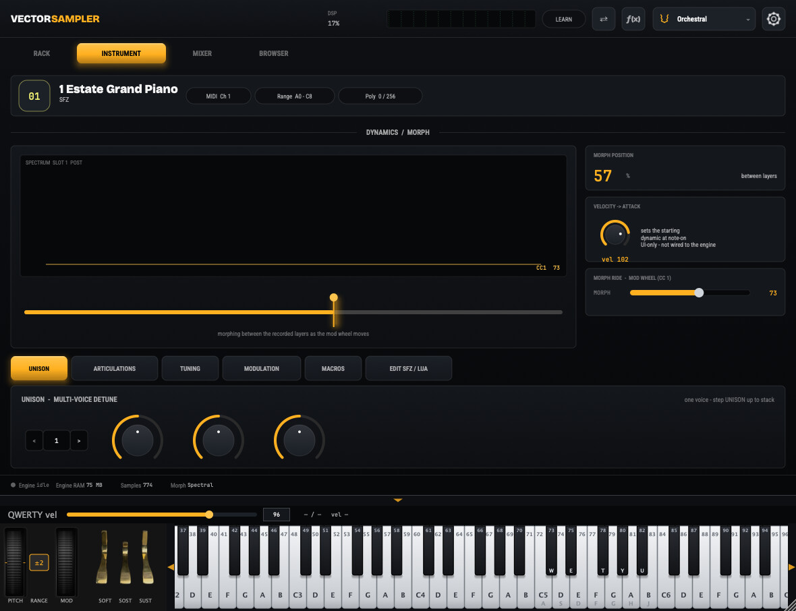
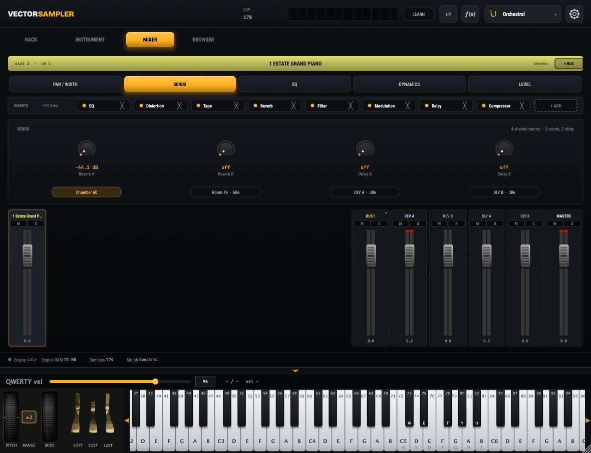
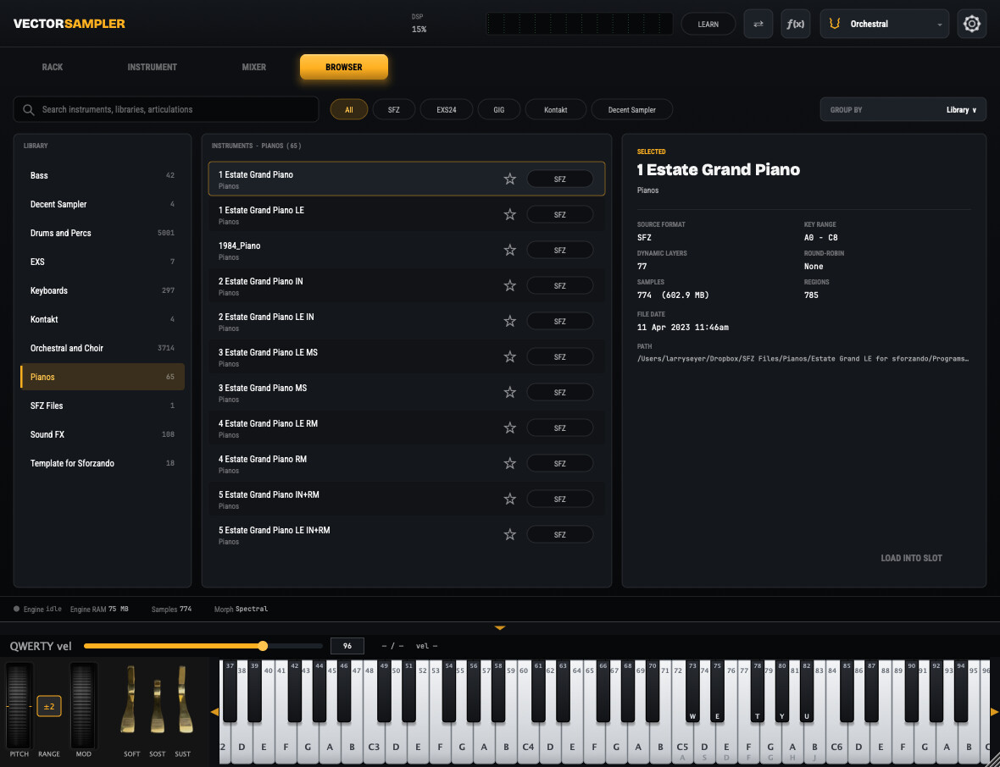

VectorSampler
A multi-timbral sample-player instrument built around a simple dissatisfaction: samplers switch between an instrument's dynamic layers, and you can hear the switch.
The Idea
A well-sampled instrument is recorded at several dynamic levels — soft, medium, hard — because a real instrument does not merely get louder as it is played harder. It changes character. The bow bites, the string rings differently, the hammer strikes with a different spectrum.
Every sampler I have used handles this the same way: it stores those layers and picks one. Play between two of them and the instrument crossfades, which mixes two different moments rather than producing the moment in between. The seam is audible, and players learn to work around it.
VectorSampler is being built to produce the tone that genuinely belongs at that dynamic, rather than a mixture of the two nearest recordings. That is the design goal the instrument exists to pursue, and the part still under active development.
The engine that does it is VectorMorph, described on its own page.
Where It Comes From
I have been making sample libraries since the Gigasampler days, and I recorded and programmed GigaPiano. Decades of building libraries is decades of running into the same wall from the library side, working around a limitation that lives in the player rather than the recordings. This instrument is an attempt to fix it at the source.
Design
- Multi-timbralMultiple independent instruments in one instance, each with its own output
- SFZ playbackReads the open SFZ format, so existing libraries load directly
- Continuous layer morphingThe core research, built on the VectorMorph engine: deriving the tone between sampled dynamic layers rather than crossfading them
- Real-time safeBuilt to the same strict audio-thread rules as OTTO and IDA: no allocation, locking, or file access while sound is playing
- Standalone and pluginPlanned as VST3, AU, AUv3, and CLAP alongside a standalone application
Screenshots
Captured from a running build over OSC.



Licensing
VectorSampler will be commercial, proprietary software — licensed, not sold. Its source is not publicly available. Music you make with it will be yours, with no royalty owed on it.